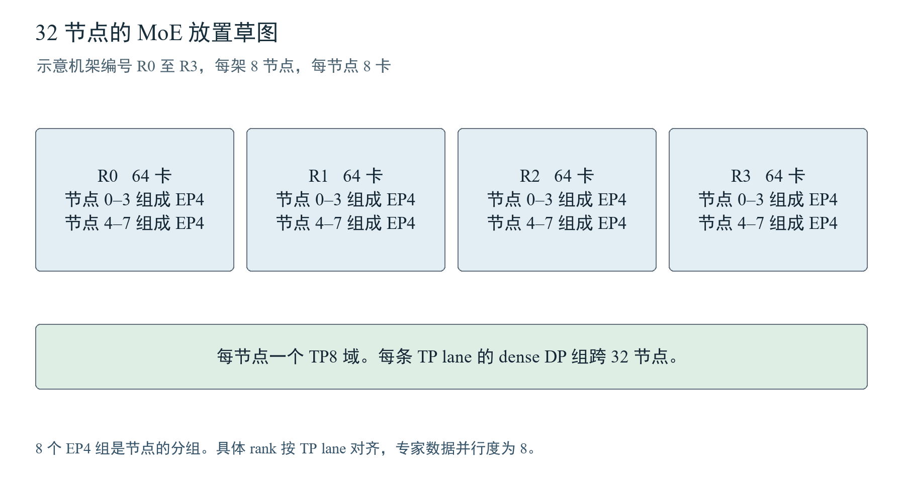

代码块旁的行号链接指向本课采用的提交，仓库及许可见课末。
1 训练样本的有效监督位置
训练样本依次经过解码、分词、排序、packing、主存队列和设备传输。比较数据管线时分别报告入口读取率（原始字节/秒）和有效监督吞吐率。后者的分子是实际参与 loss 的 token 位置数，分母是同一观察窗口的墙钟秒数。padding 和被 mask 的 prompt 不计入分子。即使读取率相同，文本组成与分词结果也会改变每秒获得的有效位置数。
代码 1 TorchTitan 对同一 token 序列分别切出输入与标签
def __call__(
self, sample: dict[str, Any], rng: np.random.Generator
) -> TextSequence | None:
del rng
input_ids = np.asarray(
self._tokenizer.encode(self._text_fn(sample), add_bos=True, add_eos=True),
dtype=np.int64,
)
if len(input_ids) < 2:
return None
return TextSequence(
input_ids=input_ids[:-1],
labels=input_ids[1:],
)例如 [BOS,甲,乙,EOS] 产生输入 [BOS,甲,乙] 和标签 [甲,乙,EOS]。一个长度 4 的编码产生 3 个训练位置。chat 分支还需按移位后的 assistant mask 屏蔽标签。
两段已经对齐的训练序列各长 5 和 3。逐条 pad 到 8 要占 16 个槽位，8 个有用。装进一行 8 个位置可把槽位利用率从 50% 提到 100%。若训练定义要求文档相互隔离，attention 还要携带 segment 边界。仅将第二段 position 重新从零开始，attention kernel 仍需要实际的分段 mask 或 cu_seqlens 才能隔开前一段。
代码 2 每次切相同的 token 与 label 区间，移动剩余偏移
available_tokens = self._num_tokens_per_row - num_tokens
num_segment_tokens = min(
segment_end - self._remainder_offset,
available_tokens,
)
token_slice = slice(
self._remainder_offset,
self._remainder_offset + num_segment_tokens,
)
input_parts.append(np.asarray(sequence.input_ids[token_slice]))
label_parts.append(np.asarray(sequence.labels[token_slice]))
position_parts.append(np.arange(num_segment_tokens, dtype=np.int64))
# Keep padding from an upstream packer marked as padding.
mask_parts.append(
np.zeros(num_segment_tokens, dtype=np.bool_)
if sequence.padding_mask is None
else np.asarray(sequence.padding_mask[token_slice], dtype=np.bool_)
)
num_tokens += num_segment_tokens
self._remainder_offset += num_segment_tokensavailable_tokens 是本行空位，num_segment_tokens 取剩余文档区间与空位的较小值。position_parts 从当前片段起点编号。跨行的下一段能看多长历史由所选训练样本构造决定。
↑ 返回知识点目录2 预取游标与训练进度
假设训练步 80 已消费 800 条样本，预取线程已解码到 832。若把 832 存成恢复游标，而模型权重只包括前 800 条，重启会跳过 32 条。相反，若权重已经更新到 832 却恢复到 800，会再做一遍更新。可恢复边界应关联 optimizer step、样本顺序和已提交样本数。
代码 3 保存 epoch 内消费进度及重建 shuffle 所需的参数
world = self._parallel_rank_world
epoch = self.next_epoch - 1
epoch, offset = self._resume(world, epoch)
if from_beginning:
sample_in_epoch = num_samples
else:
sample_in_epoch = offset + num_samples
# If `self.initial_physical_nodes` is None, we are running for the first time, so we set
# initial_physical_nodes to the current number of physical nodes. Otherwise, we persist
# initial_physical_nodes as the value loaded and set from the resumption state.
initial_physical_nodes = world.num_nodes if self.initial_physical_nodes is None \
else self.initial_physical_nodes
return {
'epoch': epoch,
'sample_in_epoch': sample_in_epoch,
'num_canonical_nodes': self.num_canonical_nodes,
'shuffle_seed': self.shuffle_seed,
'initial_physical_nodes': initial_physical_nodes,from_beginning 区分绝对进度和相对上次恢复点的增量。还保存 canonical nodes、shuffle seed 和最初的物理节点数，使逻辑分区在后续恢复时可追溯。
代码 4 半条文档通过父迭代器状态与文内偏移一起恢复
def get_state(self) -> dict[str, Any]:
if self._remainder is None:
parent_state = self._parent.get_state()
else:
assert self._remainder_parent_state is not None
parent_state = self._remainder_parent_state
return {
"parent": parent_state,
"has_remainder": self._remainder is not None,
"remainder_offset": self._remainder_offset,
"finished": self._finished,
}
def set_state(self, state: dict[str, Any]) -> None:
self._parent.set_state(state["parent"])
self._remainder = None
self._remainder_parent_state = None
self._remainder_offset = 0
self._finished = state["finished"]
if state["has_remainder"]:
self._remainder_parent_state = state["parent"]
self._remainder = next(self._parent)
self._remainder_offset = state["remainder_offset"]长度 11 的样本在第一行用掉 8 个位置。保存读取该文档之前的父状态，恢复时重取同一文档并移到 offset=8，余下 3 个位置恰好进入下一行。只保存下一文档号将漏掉它们。
改变 DP 数量后，样本到 rank 的映射可能改变。复核弹性恢复可固定数据清单、tokenizer 版本、shuffle seed、epoch 和全局有效样本游标，重建若干步的全局样本 ID 与片段区间。即使序列覆盖一致，新的梯度归约顺序仍会影响浮点结果。
情境 一篇文档有 10 个可训练位置，从零编号，提交的训练步已消费前 4 个。
问题 若从头重启或直接跳到下一篇，各重复或遗漏哪些位置？正确 offset 是多少？
答案
结论 会重复 0…3 或遗漏 4…9，正确 offset=4。
推导 从头开始会重复位置 0–3，跳到下一篇会遗漏 4–9。应恢复到同一文档的 offset=4，再结合全局 shuffle、packing 缓冲及 tokenizer 版本恢复相同逻辑流。用重启前后的若干样本 ID、位置和标签序列核对。
回看题干 ↑3 数据分片与 NVMe 缓存
大数据集常把许多样本合并为 shard，以减轻对象存储的请求和元数据负担。全局逐样本随机读会同时触碰许多 shard。缓存装不下活跃集合时，节点会反复下载同一对象。按 shard 或块打乱可改善局部性，代价是相邻样本的来源可能更相关。应检查各训练窗口内的数据源和难度分布。
代码 5 在 canonical node 边界处切分 shard 的样本编号区间
# spans are (begin, end excl)
samples_this_span = span[1] - span[0]
# check if the shard span contains more samples than the part (canonical node) can fit
if part_end < samples_so_far + samples_this_span:
# if there is space left in the part, split the span
if samples_so_far < part_end:
split = part_end - samples_so_far
# create a span, filling up with as many samples as possible from shard span
new_span = span[0], span[0] + split
out_spans.append(new_span)
# modify the old shard span to reflect that it's been split
spans[span_index] = span[0] + split, span[1]
samples_so_far += split
break对 10 条样本划 3 个逻辑分区，右端点依次为 3、6、10。若一个 shard 覆盖 [2,7)，它会被切成 [2,3)、[3,6)、[6,7)。分配的是同一对象内的逻辑范围，物理下载仍可按完整 shard 发生。
代码 6 下载前按解压峰值预留，释放锁后再做 I/O
# If cache_limit is enabled, we first may have to make space for the new shard.
if self.cache_limit:
# Evict one shard at a time until our download will stay under the cache limit.
# This means both the raw and zip forms of the shard due to decompressing.
shard_max_cache_usage = shard.get_max_size()
while self.cache_limit < self.cache_usage + shard_max_cache_usage:
self._evict_coldest_shard()
# With the above preamble done, we can release the cache lock.
lock.release()
# Perform the download (shard will not be modified by others in PREPARING state).
delta = stream.prepare_shard(shard)256 MiB 压缩文件解压到 768 MiB 时，两份共存可需要约 1 GiB。以 768 MiB 作准入预算会低估峰值。释放锁让其他线程继续查询缓存，PREPARING 状态承担同一 shard 的排他准备责任。
代码 7 预取窗口比较准备位置和交付位置
# If we are requested to only pre-download so many samples, if we have as many or more
# downloaded already, we wait and check again later.
if self.predownload is not None:
samples_ahead = it.prepare_index - it.yield_index
if self.predownload < samples_ahead:
sleep(TICK)
continue
# If we hit -1, we skip.
sample_id = it.sample_ids[it.prepare_index]
if sample_id == -1:此处单位是样本。相同窗口碰到长短样本或不同 shard 大小，实际字节和时间跨度会不同。64 路 worker 同时调大窗口还可能把压力集中到同一份对象存储。
设单节点每秒消费 1.2 GiB 有效数据，远端遇到最长 2 秒间歇，本地至少要预存约 2.4 GiB 可立即消费的数据才能跨过去。若长期有效供给只有 1 GiB/s，再大的预取队列最终也会见底。先看稳态输入率，再用队列吸收短期波动。
↑ 返回知识点目录4 检查点的暂存与持久化
训练到步 k 时，参数和 optimizer moments 会在 k+1 步原地变化。异步保存需要先冻结同一逻辑步的状态，例如把它复制到独立主存缓冲，再从那里并行写存储。训练能继续更新的时刻取决于 staging 完成；故障恢复能选用 k 的时刻还取决于上传、完整元数据和存储后端的持久性。
代码 8 在返回此响应类型的路径中，两个 Future 暴露不同完成事件
class AsyncSaveResponse:
"""This class contains futures for staging and upload completion.
It is returned by async_save().
staging_completion is a future that indicates when local copy
of state_dict is complete.
upload_completion is a future that indicates when a checkpoint
completed saving.
"""
staging_completion: Future[None]
upload_completion: Future[None]staging_completion 表示本地复制完成，upload_completion 才对应保存操作完成。其他配置可能返回单个 Future。调度器需要按所用返回类型选择正确等待点。

图 17-1 同一快照的稳定副本与可恢复提交点。
假设模型、优化器及其他状态合计 4 TiB，集群实际共享写带宽 64 GiB/s，仅载荷就需要 64 秒。每 300 秒保存一次，长期平均需要约 13.65 GiB/s。后台上传与训练读取共用网络，当高峰吞吐超过出口时，即使训练线程不等待 Future，也可能出现 step 时间抖动。
有空间容纳一个 staging 副本时，下一次保存若早于上一次上传结束，就要等缓冲释放、跳过本次或申请第二份。并发两份可改善短时阻塞，也会让主存峰值近乎加倍。增量保存仅在能识别稳定的未变内容时节约字节，还需要保存基线版本并验证整条恢复依赖。
↑ 返回知识点目录5 检查点目录的可恢复性
代码 9 汇总各 rank 的 WriteResult，构造索引到存储位置的元数据
def finish(self, metadata: Metadata, results: list[list[WriteResult]]) -> None:
metadata.version = CURRENT_DCP_VERSION
storage_md = {}
for wr_list in results:
storage_md.update({wr.index: wr.storage_data for wr in wr_list})
metadata.storage_data = storage_md
metadata.storage_meta = self.storage_meta()
tmp_filename = (
f"__{self.rank}{_metadata_fn}.tmp"
if not self.use_collectives and self.rank is not None
else f"{_metadata_fn}.tmp"
)
tmp_path = cast(Path, self.fs.concat_path(self.path, tmp_filename))
with self.fs.create_stream(tmp_path, "wb") as metadata_file:
pickle.dump(metadata, metadata_file)权重分片存在只证明某次写操作产生了文件。完整索引还要能覆盖预期的全局张量范围、optimizer slot 和训练状态，恢复端才能重分片。
代码 10 元数据最后才移动到正式路径
# delete in-case other checkpoints were present.
if not self.use_collectives and self.rank is not None:
metadata_path = self._get_metadata_path(self.rank)
else:
metadata_path = self._get_metadata_path()
if self.fs.exists(metadata_path):
self.fs.rm_file(metadata_path)
self.fs.rename(tmp_path, metadata_path)本地文件系统代码对已有 metadata 先删除后 rename。每代检查点写到独立目录能避免覆盖旧代时产生缺口。对象存储的 rename 通常有不同语义，应采用对象后端实际提供的完成清单和版本协议。
同一次检查点经过的存储层
| 位置 | 适合放什么 | 故障后的实际边界 |
|---|---|---|
| 节点 NVMe | 热数据、staging、临时副本 | 节点失联时须从其他故障域恢复 |
| 并行文件系统 | 各 rank 分片和可共享的目录 | 条带带宽与目录元数据吞吐均可能成为瓶颈 |
| 对象存储 | 独立版本的 shard 与 manifest | 按校验、长度和版本确认对象齐全后发布指针 |
把每个小 tensor 写成独立文件，16 万个文件即使每个只有少量字节，也可能耗在 create/open/stat 上。合并成较大对象后，manifest 必须带 offset、length 和 dtype，随机恢复可以只读取所需区间。若一个新 rank 需要全局行 [3,7)，而原分片为 [0,4) 与 [4,8)，应分别读取 [3,4) 与 [4,7)，再按全局位置拼接，不能按旧 rank 号整份装载。
↑ 返回知识点目录6 256 卡作业的整组调度
一个固定 world size 的 MoE 训练作业要求 32 个节点，每节点 8 卡。集群有 64 个节点各剩 4 卡，计数上共 256 卡，却无法满足每节点完整 8 卡的约束。若先绑定一部分 Pod，让它们长期占卡等待同伴，会造成碎片并阻塞后续作业。队列配额、拓扑可行性、成组准入与进程实际就绪对应四个判断。
代码 11 Volcano 核对有效任务数能否达到 MinAvailable
vtn := job.ValidTaskNum()
if vtn < job.MinAvailable {
return &api.ValidateResult{
Pass: false,
Reason: v1beta1.NotEnoughPodsReason,
Message: fmt.Sprintf("Not enough valid tasks for gang-scheduling, valid: %d, min: %d",
vtn, job.MinAvailable),
}
}
return nilvalid task 数达到下限是作业具备可调度性的前提，后续仍要找到节点资源。固定 256 rank 的同步训练应把最小可用集合配置成足以运行一个完整 mesh。
代码 12 实际就绪还检查任务、子组与作业状态
ssn.AddJobReadyFn(gp.Name(), func(obj interface{}) bool {
ji := obj.(*api.JobInfo)
if ji.CheckTaskReady() && ji.CheckSubJobReady() && ji.IsReady() {
return true
}
return false
})准备充分后才允许作业进入相应就绪状态。允许动态 membership 的训练还要在应用内支持重新 rendezvous、重建通信组和恢复状态。
代码 13 Kueue 检查 flavor 的拓扑信息及所需层级
s := cq.TASFlavors[kueue.ResourceFlavorReference(flavor.Name)]
if s == nil {
// Skip Flavors if they don't have TAS information. This should generally
// not happen, but possible in race-situation when the ResourceFlavor
// API object was recently added but is not cached yet.
return new(fmt.Sprintf("Flavor %q information missing in TAS cache", flavor.Name))
}
if !s.HasLevel(ps.TopologyRequest) {
// Skip flavors which don't have the requested level
return new(fmt.Sprintf("Flavor %q does not contain the requested level", flavor.Name))
}已有名义 quota 仍可能缺 topology cache 或所请求的层级。Scheduler 需能在 node、rack 等正确层次表达约束，后续绑定还要与实际设备分配一致。
队列可把名义配额分给多个团队，再在有闲置时允许借用。抢占应核对受害作业的重做成本、能否及时写出快照、腾出的资源能否凑成完整新 gang。一个跨机架分散的低优先级作业即使释放 64 卡，也可能没有腾出八个完整节点。
↑ 返回知识点目录7 Rank、互连与故障域映射
教学机型设为每节点一个 8 卡高速域、两张分别接入 rail 0/1 的 NIC，每架 8 个节点。先为 dense 层设 TP8 节点内，DP32 跨节点，PP=1。在 MoE 层把相同 32 个数据 rank 按 4 个连续节点组成 EP4，剩余轴为专家数据并行 8。EP 在 dense DP 这条轴上重新分组，设备总数仍为 256。

图 17-2 256 卡示例中，专家交换限制在 4 节点组，dense 梯度同步沿 32 个数据 rank 发生。
每个 4 节点 EP 组放在同一机架，每架放两组，降低专家 all-to-all 跨架竞争。固定 TP lane 的 32 rank dense 数据组跨 4 架同步。按每条 rail 的实际 GPU/NIC 亲和位置选传输路径，确认两张 NIC 的有效带宽和交换机上行。节点有两张 NIC 本身无法推导可用聚合带宽翻倍。
代码 14 Slurm GRES 将设备探测结果与配置清单合并
gres_list_system = gpu_g_get_system_gpu_list(node_config);
if (slurm_conf.debug_flags & DEBUG_FLAG_GRES)
log_lvl = LOG_LEVEL_VERBOSE;
else
log_lvl = LOG_LEVEL_DEBUG;
if (gres_list_system) {
if (list_is_empty(gres_list_system))
log_var(log_lvl,
"There were 0 GPUs detected on the system");
log_var(log_lvl,
"%s: Merging configured GRES with system GPUs",
plugin_name);
rc2 = _merge_system_gres_conf(gres_conf_list, gres_list_system);
if (rc == SLURM_SUCCESS)
rc = rc2;依据调度器所见 GPU 的类型、数量与绑定信息分配任务。MIG slice、整卡及同型号不同拓扑需要用对应资源描述；实际 rank 到 GPU 到 NIC 映射还要与作业内启动器核对。
在 Kubernetes，device plugin 报告可分配的扩展资源，Pod 的 GPU limit 决定请求的设备数量。Kueue 管队列与准入，节点调度和 kubelet 分配设备随后发生。Ray placement group 把 actor 资源写成 bundles，PACK/SPREAD 约束描述 bundles 的相对位置；KubeRay 负责管理 Ray 集群与作业，仍依赖底层节点和 GPU 资源。指定高速域需要真实标签与实际设备拓扑。
Ray placement group 的 bundle 与放置策略
↑ 返回知识点目录8 机架故障后的恢复点
沿一次故障演练检查设计。步 1000 已提交到另一故障域，步 1020 的部分 rank 仍在写入。机架 A 故障后旧 world 中的同步 collective 会等待缺失成员。协调器选择完整的步 1000，确认所有旧 rank 退出，并以新作业代数重建进程组。如果备用机架少了一个完整节点，原先的 TP8×DP32 布局暂时无法重建。
两种可评审的选择是等待第 32 个节点，或在算法和 checkpoint reader 支持的情况下缩小 DP。后一条路径重新解释全局 batch、gradient accumulation、样本游标和学习率调度。专家所有权也要重新分配，TP 和 EP 的整除条件逐一核实。仅换一行 world_size 可能让数据重复或专家缺失。
平台评审交付的证据
| 待验收问题 | 可复核记录 |
|---|---|
| 数据是否接对 | 全局 step、样本 ID、tokenizer 版本、文内 offset 与后续数步有效 token |
| 是否真的可恢复 | 版本清单、每块大小和校验、完整恢复试读与进入下一有效步的时间 |
| 放置是否符合通信路径 | 每 rank 的节点、GPU、TP/EP/DP 组、NIC/rail、rack 与共享出口 |
| 存储是否影响通信 | checkpoint 写入、shard miss 与 collective 的重叠时间及同出口字节 |
如果所有 GPU 均在等待某个 rank，先检查该 rank 的下一 batch 是否已经就绪，再看它何时进入 collective。一次远端 shard miss 可以最终表现为全体通信等待。把样本 ID、shard、rank、step 和 checkpoint 写入时段连在一起，就能把排查交给正确的一层。
情境 步 1000 已完整提交至另一故障域；步 1020 仍有分片在写，此时一个机架失联。
问题 选恢复点，写出恢复前以及恢复后的验证动作。
答案
结论 从步 1000 恢复，校验清单和分片并跑通下一个有效步。
推导 选择 1000。读取已提交清单，检查所有逻辑分片、大小、内容校验以及优化器和数据游标属于同一步，然后试读并运行到下一有效步。1020 的目录可能已出现，缺任何必要分片都不能当作完整版本。
回看题干 ↑情境 作业固定 TP8×DP32。故障后只有 31 个健康的八卡节点，模型和每节点 GPU 数不变。
问题 算剩余卡数，判断能否原样启动；若改为 DP31，需核对哪些训练语义？
答案
结论 剩 248 卡，只能容纳 31 个 TP8 组；调整 DP 时还须重建状态与训练批量语义。
推导 31×8=248，比原布局少一整组 TP8，无法原样满足 32 份数据副本。可等待备用节点；若框架和算法支持，改用 31 份时须重建进程组、检查专家整除与放置、按新布局恢复分片。全局 batch、累积步数和样本分发也需重算，不能只更改 world size。
回看题干 ↑